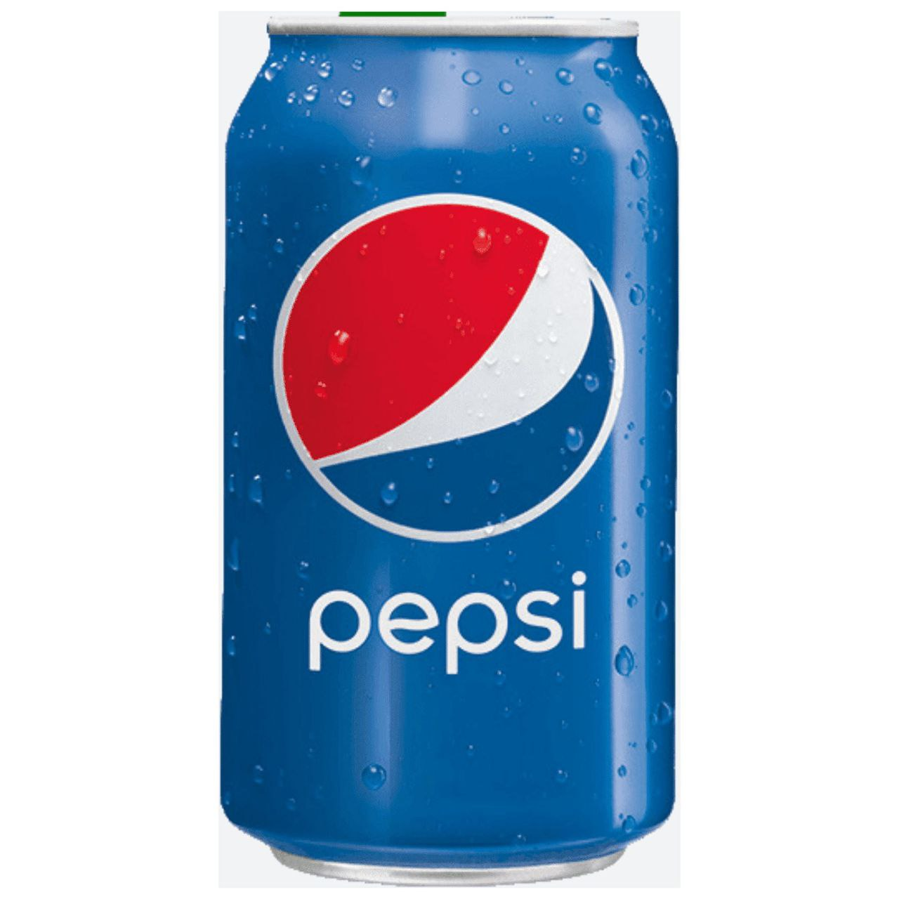
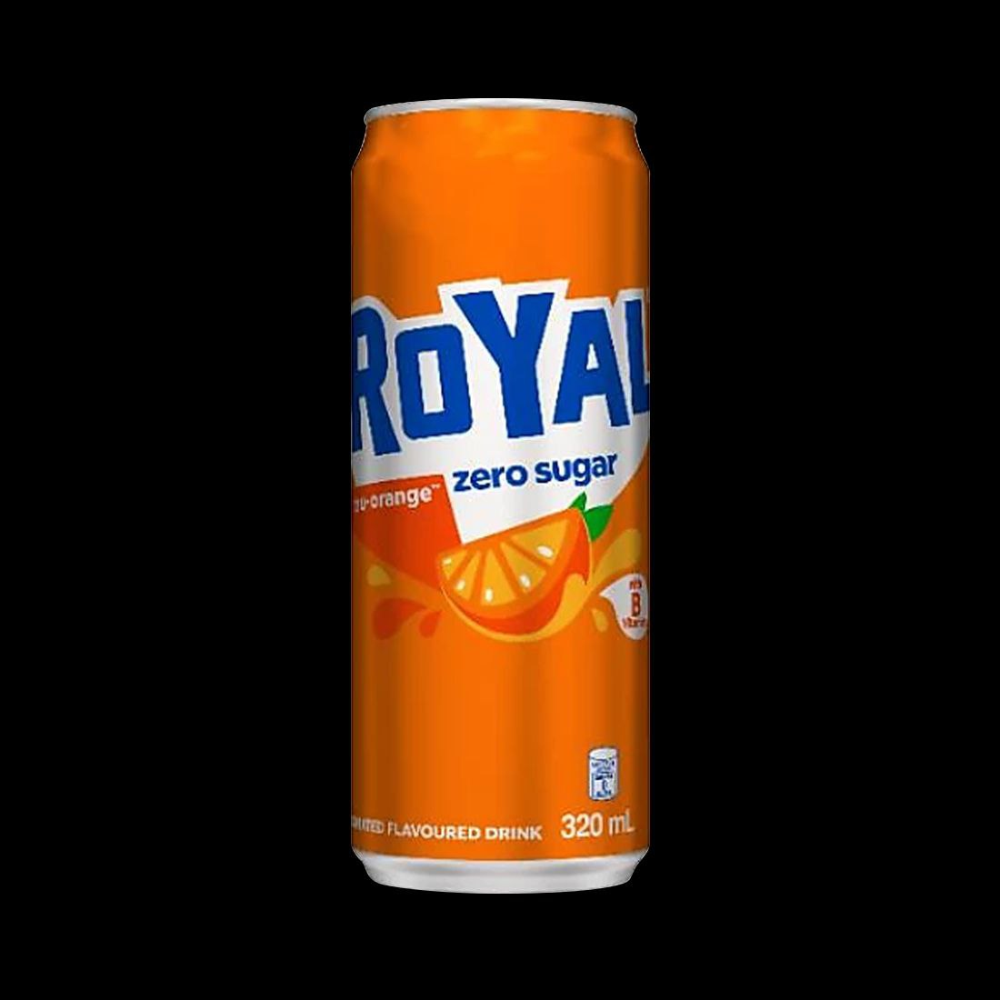
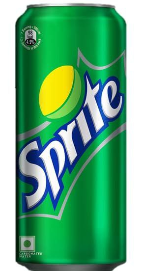
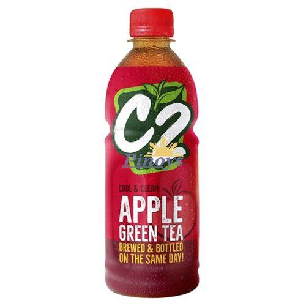
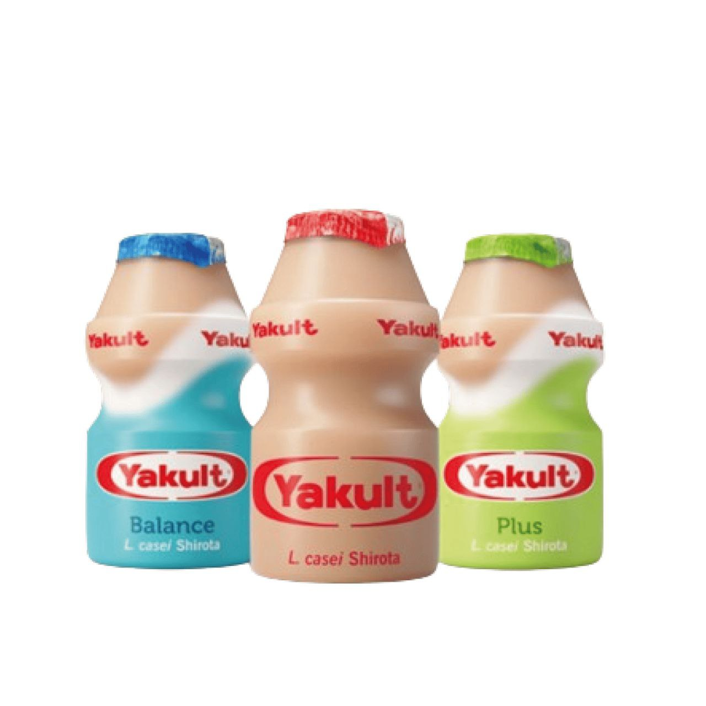

| NAME | Weight/Volume | Description | Image | Pepsi | 1,5L | Pepsi is a carbonated soft drink with a cola flavor, manufactured by PepsiCo which serves as its flagship product. In 2023, Pepsi was the second most valuable soft drink brand worldwide behind Coca-Cola, the two share a long-standing rivalry in what has been called the "cola wars". |  |
|---|---|---|---|
| Royal | 1.5L | The Royal brand became best associated with its orange-flavored soft drink, Royal Tru-Orange. |  |
| Sprite | 1.5L | The lemon-lime drink known today as Sprite was developed in West Germany in 1959 |  | C2 | 500ml | Water, Fresh Brew from Green Tea Leaves, Sugar, Acidity Regulators (E330, E331, E296), Antioxidant (E300), Artificial Flavor and Color (E150a). |  |
| Yakult | 80ml | Yakult is a fermented milk drink containing the live cultures of the lactic bacteria, Lacticaseibacillus paracasei strain Shirota (LcS), which can survive in the human intestinal tract. In 1930, Dr. Minoru Shirota, founder of the Yakult Honsha, isolated this strain of lactic acid bacteria which plays a beneficial role in the human intestines. Subsequently, the product Yakult was developed. |  |